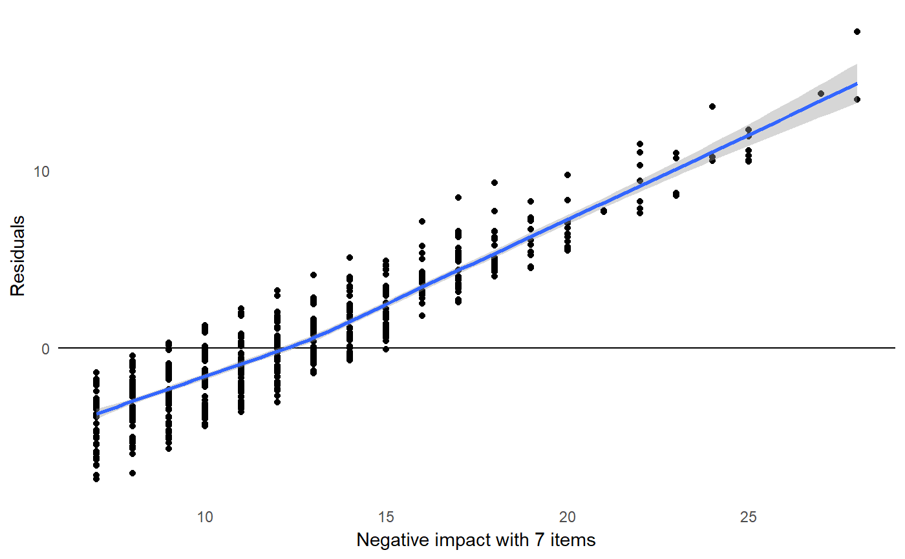
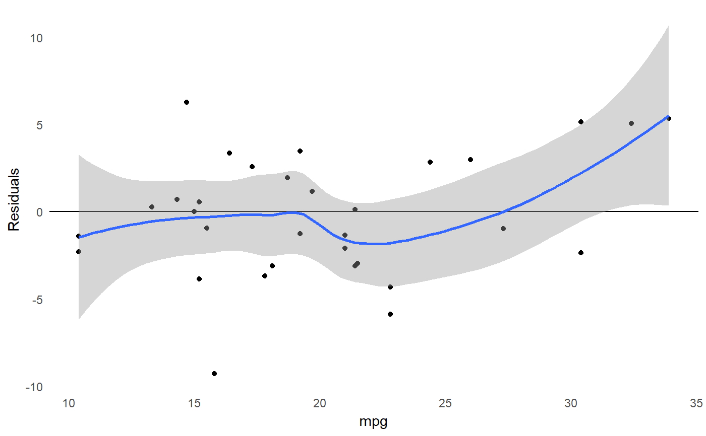
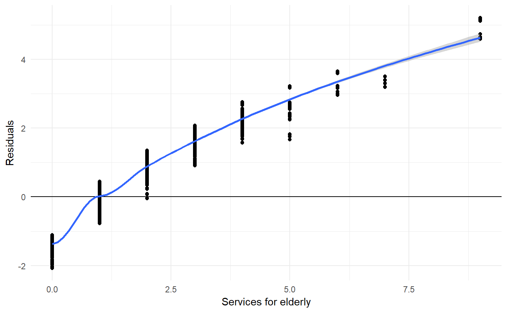
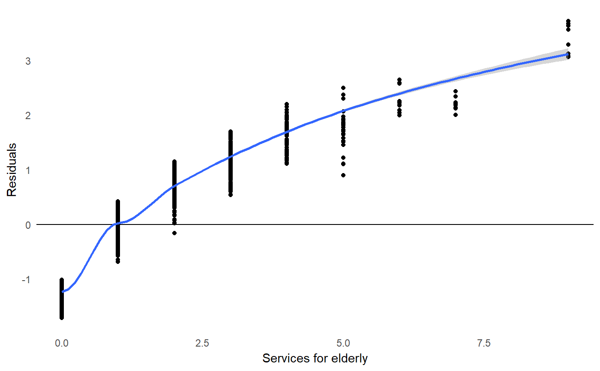

sjp.kfold_cv.RdThis function plots the aggregated residuals of k-fold cross-validated models against the outcome. This allows to evaluate how the model performs according over- or underestimation of the outcome.
sjp.kfold_cv(data, formula, k = 5, fit)
| data | A data frame, used to split the data into |
|---|---|
| formula | A model formula, used to fit linear models ( |
| k | Number of folds. |
| fit | Model object, which will be used to compute cross validation. If
|
This function, first, generates k cross-validated test-training
pairs (using the crossv_kfold-function) and
fits the same model, specified in the formula- or fit-
argument, over all training data sets.
Then, the test data is used to predict the outcome from all
models that have been fit on the training data, and the residuals
from all test data is plotted against the observed values (outcome)
from the test data (note: for poisson or negative binomial models, the
deviance residuals are calculated). This plot can be used to validate the model
and see, whether it over- (residuals > 0) or underestimates
(residuals < 0) the model's outcome.
Currently, only linear, poisson and negative binomial regression models are supported.
data(efc) sjp.kfold_cv(efc, neg_c_7 ~ e42dep + c172code + c12hour)#> Warning: Removed 74 rows containing non-finite values (stat_smooth).#> Warning: Removed 74 rows containing missing values (geom_point).sjp.kfold_cv(mtcars, mpg ~.)# for poisson models. need to fit a model and use 'fit'-argument fit <- glm(tot_sc_e ~ neg_c_7 + c172code, data = efc, family = poisson) sjp.kfold_cv(efc, fit = fit)#> Warning: pseudoinverse used at -0.045#> Warning: neighborhood radius 1.045#> Warning: reciprocal condition number 1.753e-028#> Warning: There are other near singularities as well. 1#> Warning: pseudoinverse used at -0.045#> Warning: neighborhood radius 1.045#> Warning: reciprocal condition number 1.753e-028#> Warning: There are other near singularities as well. 1# and for negative binomial models fit <- MASS::glm.nb(tot_sc_e ~ neg_c_7 + c172code, data = efc) sjp.kfold_cv(efc, fit = fit)#> Warning: pseudoinverse used at -0.045#> Warning: neighborhood radius 1.045#> Warning: reciprocal condition number 1.753e-028#> Warning: There are other near singularities as well. 1#> Warning: pseudoinverse used at -0.045#> Warning: neighborhood radius 1.045#> Warning: reciprocal condition number 1.753e-028#> Warning: There are other near singularities as well. 1